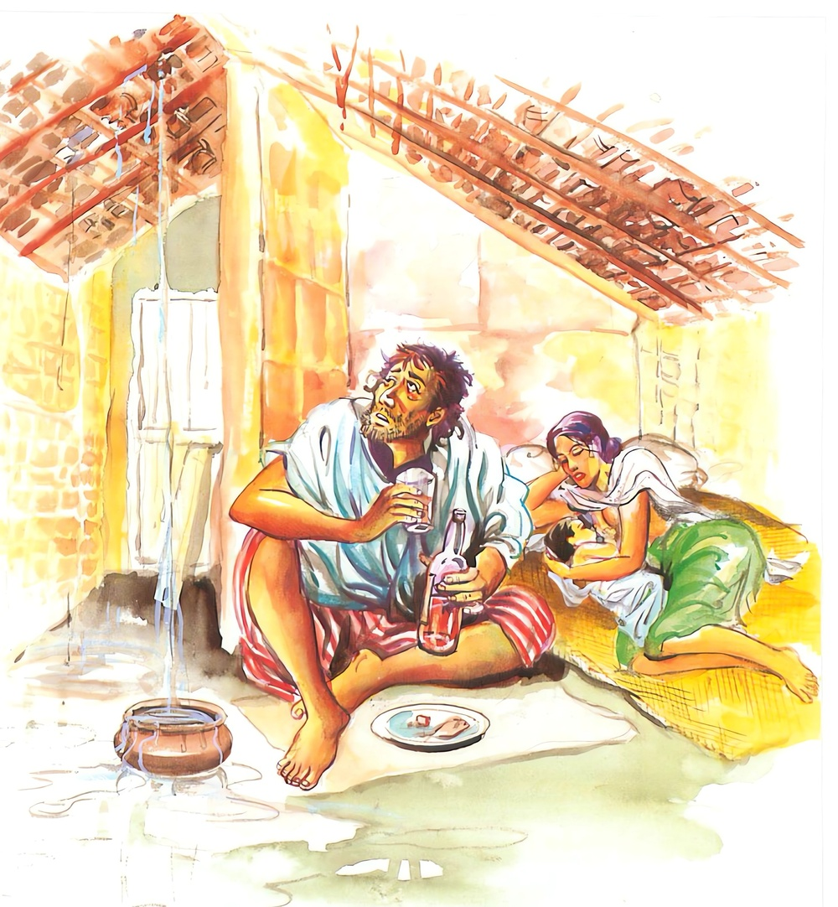
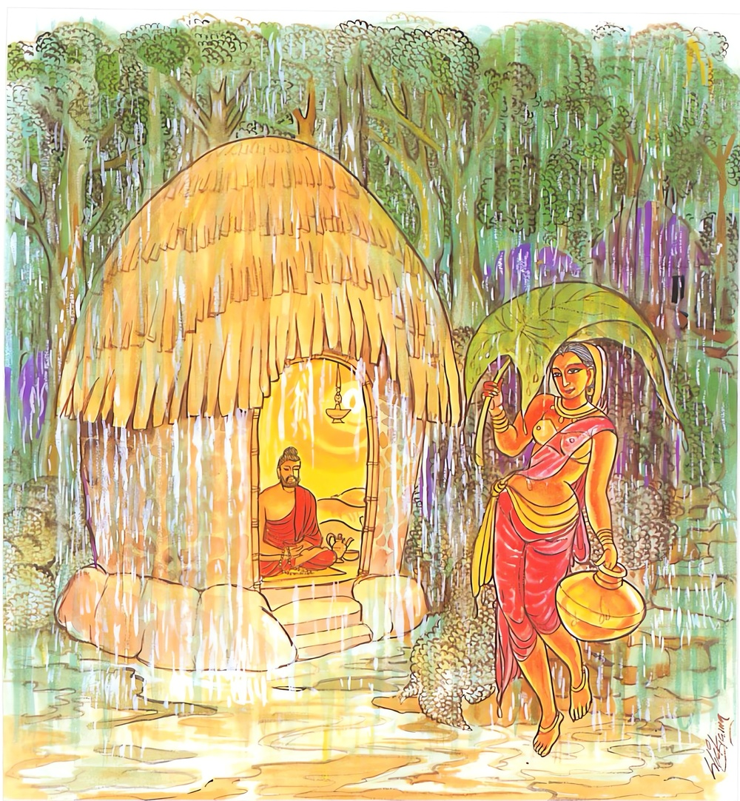

1-9 නවවන නන්ද ස්ථවිර වස්තුවයි.
මෙම කතාව සද්ධර්ම සාගරයෙන් ද කියවන්න.
යථාගාරං දුච්ඡන්නං වුට්ඨී සමතිවිජ්ඣති
එවං අභාවිතං චිත්තං රාගො සමතිවිජ්ඣති.
නොමනා සේ සෙවිලි කළ කිසි ගෙයක් වැසි දහර යම් සේ විනිවිද යේ ද, එසේ ම කාමරාග තෙමේ භාවනා වශයෙන් නො වැඩු සිත අතිශයින් විනිවිද යෙයි.

යථාගාරං සුච්ඡන්නං වුට්ඨී න සමතිවිජ්ඣති
එවං සුභාවිතං චිත්තං රාගො න සමතිවිජ්ඣති.
වැසි දහර සකස් කොට සෙවිලි කරන ලද ගෙයක් යම් සේ විනිවිද නො යන්නේ ද, එ පරිදි ම කාමරාග තෙමේ භාවනා වශයෙන් මොනවට වැඩු සිත විනිවිද නො යයි.

‘යථාගාරං’ ආදි මේ ධර්මදේශනාව බුදුරජාණන්වහන්සේ දෙව්රම වැඩවසන සමයෙහි ආයුෂ්මත් නන්ද හිමියන් අරභයා දෙසූසේක.
ධර්මචක්ර දේශනාව පැවැත්වූ බුදුහු රජගහ නුවරට වැඩමවා වේළුවනයෙහි වසනසේක්, ‘මගේ පුතා කැඳවාගෙනවුත් මට පෙන්වව් යයි’ ශුද්ධෝදන මහරජුන් දහසක් පිරිවර ඇති දූතයන් දසදෙනාගෙන් සියල්ලන්ටම පසුව ගොස් රහත්බවට පැමිණි කාළුදායි තෙරුන් විසින් කිඹුල්වතට වැඩමවීමට සුදුසු කාලයයයි මාර්ග වර්ණනා කරන ලදි. ඉන්පසු බුදුහු විසිදහසක් පමණ රහතුන් පිරිවරා කපිලවස්තුවට වැඩමවා නෑ සමාගමයෙහි වැටීම කරණකොට වෙස්සන්තර ජාතකය වදාරා දෙවෙනි දින පිඬු පිණිස වැඩමවා ‘උත්තිට්ඨෙ නප්පමජ්ජෙය්ය’ ආදි ගාථාව වදාළහ. එයින් පියරජු සෝවාන් ඵලයෙහි පිහිටුවා ‘ධම්මං චරෙ’ ආදි ගාථාවෙන් මහාප්රජාපතී ගෝතමිය සෝවාන් ඵලයෙහිද, රජුන් සකෘදාගාමි ඵලයෙහිද පිහිටුවූහ.
එදින බත්කිස අවසානයෙහි රාහුලමාතාවගේ ගුණ කථාව නිසා ‘ඡන්දකිණ්ණර’ ජාතකය දේශනාකොට එයින් දෙවෙනි දිනයෙහි නන්දකුමරුගේ අභිෂේකය, ගෘහප්රවේශය, විවාහමංගල්යය යන කටයුතු පැවැත්වෙන අතර පිඬු පිණිස වැඩමවා නන්දකුමරුන් අතට පාත්රය දී මංගල කරුණු කියාදී අසුනින් නැගිට වඩිනවිට නන්දකුමරුන් අතට දුන් පාත්රය නොගත්සේක. ඔහුද බුදුන් කෙරෙහි ගෞරවයෙන් ‘ස්වාමීනි, ඔබවහන්සේගේ පාත්රය ගනුමැනවැයි කියන්ට අසමත්විය. හේ මෙසේ සිතීය. ‘බුදුහු ඉණිමං හිසදී පාත්රය ගනු ඇති’. බුදුහු එතනදී පාත්රය නොගත්හ. කුමරු, ඉණිමඟ යටදී ගනු ඇතැයි සිතීය. එහිදීද නොගත්හ. රජමිදුලේදී ගනු ඇති, බුදුහු එතනදීද නොගත්හ. කුමරු නවතිනු කැමැත්තෙන්, යෑමට අරුචියෙන් යන නමුත් ගෞරවය නිසා පාත්රය ගන්නැයි කීමට අසමත්විය.
මෙතනදී ගනු ඇති, අතනදී ගනු ඇතැයි සිතමින් නන්ද බුදුන් පසුපසින් යයි. එවේලෙහි, ආර්යාවනි, භාග්යවතුන්වහන්සේ නන්දකුමරු රැගෙන ගියෝය. ඔබගෙන් ඔහු වෙන්කරන්නේයයි පිරිවර ස්ත්රීහු ජනපදකළ්යාණියට දන්වා සිටියහ. ඈ දියබිඳු වැගිරෙන අඬක් වියළි අඬක් පීරු කෙසින් යුක්තව වේගයෙන් දුවගොස්, ආය පුත්රය, වහා එන්නැයි කීවාය. ඇගේ ඒ වචනය කුමරුගේ හදවතේ හරස්ව වැටුණා මෙන් ඔහුට දැනුණේය. ශාස්තෘන්වහසේත් ඔහුගේ අතින් පාත්රය නොගෙනම විහාරයට ගෙනගොස් නන්ද පැවිදි වන්නෙහිදැයි ඇසූහ. හෙතෙම බුද්ධ ගෞරවයෙන් පැවිදි නොවන්නෙමියි නොකියා, එය පැවිදි වන්නෙමියි කීය. බුදුහු එසේනම් නන්ද පැවිදි කරව්යයි භික්ෂුන් අමතා වදාළහ. බුදුරදුන් කපිලවස්තුවට ගොස් තුන්වෙනි දින නන්දකුමරු පැවිදිකරවන ලදහ. සත්වෙනි දින රාහුලමාතාව රාහුල කුමරු හැඳපලඳවා බුදුන් හමුවට යැව්වාය.
‘දරුව, මේ විසිදහසක් ශ්රමණයන් පිරිවරාගත්, රන්වන් පැහැ ඇති සිරුරක් දරන, බ්රාහ්මයකුට සමාන වර්ණවත් ශ්රමණයන්වහන්සේ දෙස බලන්න. මේ ඔබේ පියාය. මුන්වහන්සේ ගෙයින් නික්ම ගිය පසු අප දැක්කේ නැත. ඔබ යන්න, එතුමාගෙන් ඒ දායාද ඉල්ලන්න. පියාණනි, මම ඔබේ පුත්කුමරා වෙමි. මම අභිෂේක ලබා සක්විතිරජ වන්නෙමි. මට ධනයෙන් ප්රයෝජන ඇත. මට ඒ ධනය දෙනු මැනවි. පියා සතු ධනයට පුතා හිමිකාරයෙකුයයි කියවයි පිටත්කර යැව්වාය.
කුමරා බුදුන් ළඟට යාමෙන්ම පිතෘස්නේහය හය ලබා එම ප්රීති වූ සිතින්, ශ්රමණයන්වහන්ස, ඔබේ සෙවණැල්ලත් ඉතා සැපයි ආදි මෙවැනි තමන්ට ඔබින තවත් බොළඳ වචන කියමින් සිටියේය. භාග්යවතුන්වහන්සේ එදින බත්කිස නිමවා අනුමෝදනාකොට අසුනෙන් නැඟිට වැඩිසේක. කුමරාද, ශ්රමණයන්වහන්ස, මට දායාද දෙන්න, මට දායාද දෙන්නැයි භාග්යවතුන් පිටුපසම ගියේය. භාග්යවතුන්වහන්සේ කුමරා නොනැවැත්වූහ. පිරිවර ජනයෝද භාග්යවතුන් සමඟ යන ළදරු කුමරු නැවැත්වීමට අපොහොසත්වූහ. මෙසේ කුමරා භාග්යවතුන්වහන්සේ සමඟම ආරාමයට ගියේය. ඉන්පසු භාග්යවතුන්වහන්සේ මෙසේ සිතූහ.
මේ කුමරා පියාසතු ධනය බලාපොරොත්තුවෙයි. ඒ ධනය විපත් දෙමින් සසර බැඳ තැබීමට හේතුය. දැන් ඉතින් මොහුට බෝධිකාලයෙහි ලැබූ සප්තවිධ ආර්යධනය හිමිකර දෙමි. ලෝකෝත්තර දායාදයට මොහු හිමිකාරයකු කරන්නෙමියි සිතා, එසේම ශාරිපුත්රය, ඔබ මේ රාහුල කුමරා පැවිදි කරන්නැයි වදාළහ. තෙරුන්වහන්සේ රහල්කුමරු පැවිදි කළහ. කුමරා පැවිදි කිරීමෙන් ශුද්ධෝදනරජුට අධිකමාත්ර දුකක් හටගත්තේය. ඒ දුක ඉවසා දරාගත නොහැකිවූ රජු භාග්යවතුන්වහන්සේ ළඟට ගොස් භාග්යවතුන්වහන්ස, මවුපියන් අනුනොදත් දරුවන් පැවිදි නොකිරීම මැනවැයි වරයක් ඉල්ලා සිටියේය.
භාග්යවතුන්වහන්සේ ඔහුට ඒ වරය දී, නැවත එක් දවසක රජමාලිගයේදී උදේ දන් වළඳා අවසානයේදී, එකත්පසෙක හුන් රජු, ස්වාමීනි, ඔබවහන්සේ දුෂ්කරක්රියා කරන කාලයෙහි එක් දෙවියෙක් මා වෙත පැමිණ ඔබේ පුතා මැරුණේයයි කීවේය. මම ඔහුගේ වචනය භාර නොගෙන මගේ පුතා බුදුවී මිස නොමැරෙනේයයි ප්රතික්ෂේප කෙළෙමි. රජු එසේ කී කල්හි, මහරජතුමනි, දැන් ඔබ එබඳු කතා කෙසේ අදහන්නෙහිද, පූර්වයෙහි ඔබේ පුතා මළේයයි ඇට කැබලි පවා පෙන්වා කීවිටද ඔබ එය නොපිළිගත්තාහුයයි වදාරා, මේ කරුණ නිමිතිකොටගෙන මහාධම්මපාල ජාතකය දෙසූසේක. කථා කෙළවර රජු අනාගාමී ඵලයෙහි පිහිටියේය.
මෙසේ භාග්යවතුන්වහන්සේ, රජු ත්රිවිධ ඵලයෙහි පිහිටුවා භික්ෂුසංඝයා පිරිවරා යළි රජගහ නුවරට වැඩමවා අනාථපිණ්ඩික සිටුවරයාගෙන් සැවැත්නුවරට ඒම පිණිස පිළිගනු ලැබූ ප්රතිඥා ඇති හෙයින් දෙව්රම වැඩ අවසන්කොට එහි ගොස් වැඩ විසූහ. මේ ආකාරයෙන් ශාස්තෘන්වහන්සේ දෙව්රම වැඩවසන කාලයෙහි ආයුෂ්මත් නන්ද තෙරණුවෝ සසුන කළකිරී භික්ෂුන්වහන්සේලාට ඒ බව දන්වා සිටියහ. ඇවැත්නි මම මේ බ්රහ්මචර්යාවෙහි යෙදෙන්නේ කළකිරීමෙනි, බ්රහ්මචරියවාසය කඩනොකොට රැකීම මට අපහසුය. මම මේ ශික්ෂාක්රමය පසෙකින් තියා ගිහියෙක් වන්නෙමි කියාය.
භාග්යවතුන්වහන්සේ එපුවත අසා, ආයුෂ්මත් නන්ද තෙරුන් ළඟට කැඳවා, මෙසේ වදාළහ. නන්ද ඔබ බොහෝ භික්ෂූන් සමඟ, ඇවැත්නි මා මේ බ්රහ්මචර්යාවෙහි හැසිරෙන්නේ කළකිරීමෙනි, බ්රහ්මචර්ය වාසය කඩනොකොට රැකීම මට අපහසුය. මේ ශික්ෂා ක්රමය පැත්තකින් තියා ගිහියෙක් වන්නෙමියි කී බව සත්යයක්දැයි ඇසූහ. ස්වාමීනි එසේය, එය සත්යයකි. නන්ද ඔබ කවුරුන් නිසා කළකිරීමෙන් නොකැමැත්තෙන් බ්රහ්මචර්යාවෙහි හැසිරෙන්නෙහිද? බ්රහ්මචර්යය කඩනොකොට රැකීමට අපොහොසත් වන්නෙහිද? මේ ශික්ෂාක්රමය පසෙකින් තබා ගිහියෙක් වන්නෙහිද?
ස්වාමීනි, ජනපදකල්යාණී ශාක්යදුවණියෝ මා ගෙයින් පිටත්වන වේලාවේ ආර්යපුත්රය, වහා එන්නැයි අඬක් පීරූ කෙස්වලින් යුක්තව (හිස පීර පීරා සිටිමින්) මා දෙස බලා කීවාය. ස්වාමීනි ඒ වචන සිහිකරන මම, කළකිරීමෙන් මේ බඹසර වසමි. මෙම බඹසරවාසය කඩනොකොට රැකීමට අපොහොසත් වෙමි. මේ ශික්ෂාක්රමය ඉවත දමා ගිහියෙක් බවට පත්වන්නෙමි.
ඉන්පසු භාග්යවතුන්වහන්සේ නන්ද තෙරුන්ගේ අතින් අල්වාගෙන සෘද්ධි බලයෙන් තව්තිසාභවනයට ගෙනයන අතරමඟ එක් දැවුණු හේනක දැවීගිය කණුවක රැඳී තිබුණු සිඳී ගිය කන් නාසා නගුට ඇති එක් පුළුටු වූ වැදිරියකගේ සිරුරක් පෙන්වා, තව්තිසාවට වැඩිසේක. එහි සක්දෙව්රජුන්ගේ උවටැනට ආ පරෙවි පා වැනි පා ඇති දිව්ය අප්සරාවන් පන්සීයක් පෙන්වූසේක. කකුටපාදානි යනු රක්තවර්ණ හෙයින් පරෙවිපා හා සමබවය. එසේ දක්වමින් මෙසේ වදාළහ. නන්ද අභිරූපවූ දර්ශනීයවූ, ප්රසාද කරවූ පරෙවි පා වැනි පා ඇති, මේ පන්සීයක් අප්සරාවෝ හොඳද? නැතහොත් ජනපදකල්යාණි හොඳද? ඔබ සිතන්නේ කොහොමදැයි ඇසූහ.
ස්වාමීනි, අප අතරමඟදී දුටු කන් නාසා නගුට සිඳීගිය පුළුටු වැඳිරිය යම්සේද, මේ අප්සරාවන් හා සමඟ සසඳන විට ජනපදකල්යාණිය ඒ වැඳිරිය මෙනි. මේ අප්සරාවන් හා සසඳන විට ජනපදකල්යාණිය ගණනකටවත් නොගැනෙයි. මොවුන්ගෙන් භාගයක්වත් නොවටී. භාගයෙන් භාගයකටවත් නොවටී. එහෙයින් මොවුහුම අභිරූපවූත්, දර්ශනීයකරවූත් ප්රසාදාවහවූවාහුත් වන්නාහුය. භාග්යවතුන්වහන්සේ, එසේනම් නන්ද මොවුන් කෙරෙහි සිත් අලවව. මම මෙබඳු පරෙවියා වැනි පා ඇති අප්සරාවන් පන්සීයක් ඔබට ලබාදීමට පොරොන්දු වෙමි. ස්වාමීනි යම්කිසි විදියකින් ඒ පරෙවිපා වැනි පා ඇති අප්සරාවන් පන්සීයක් ලබාදීමට ඔබවහන්සේ මට පොරොන්දුවන සේක්නම්, මම ඔබවහන්සේ ළඟ බ්රහ්මචර්යවාසය විසීමට කැමැත්තෙමි.
ඉන්පසු භාග්යවතුන්වහන්සේ නන්දහිමියන් ද කැටුව එයින් අතුරුදහන්ව දෙව්රමටම වැඩිසේක. බුද්ධමාතාවගේ - මවගේ සහෝදරියකගේ පුත් බුදුරදුන්ගේ සහෝදරයකුවූ නන්දහිමියන්, දිව්යාප්සරාවන් ලබාගනු පිණිස මහණදම් පුරන බවත්, පරෙවියා වැනි පා ඇති අප්සරාවන් පන්සීයක් ලබාදෙන බවට බුදුරදුන් නන්ද තෙරුන්ට පොරොන්දුවී ඇති බවත් භික්ෂුන්වහන්සේලා අතර ප්රචාරයට පත්විය. නන්දහිමියන්ගේ සහායක භික්ෂූහු උන්වහන්සේට, නන්ද බැලයට වැඩ කරන්නෙකි, මිලයට වැඩ කරන්නෙකි, ආදි අවමන් ඇමතුමෙන් කථා කරන්ට පටන්ගත්හ. නන්ද කුලීකරුවෙකි. නන්ද මිලයට වැඩ කරන්නෙකි. ඔහු මහණදම් පුරන්නේ දිව්යාංගනාවන් ලබා ගැනීමටය. බුදුරදුන් පරෙවිපා වැනි පා ඇති දෙවඟනන් පන්සීයක් නන්දට ලබාදෙන බවට පොරොන්දුවී තිබේලූ.
නැවත නැවතත් නන්ද ආයුෂ්මතුන් සහායක භික්ෂුන්ගේ හතකවාදයෙන් හා උපක්කිතකවාදයෙන් අවමානයට පැමිණ ලජ්ජාවට පත්ව හුදෙකලාව පිරිසෙන් වෙන්ව වාසය කළ නමුදු නොබොහෝ කලකින්ම, යම් අපේක්ෂාවක් උඩ කුලපුත්රයෝ ගිහිගෙය හැර අනගාරිය සසුනෙහි පැවිදිවෙත්ද. ඒ අනුත්තරවූ බ්රහ්මචර්යය අවසානයෙහිදී ලබන ඥාන සම්භාරය තමන්ම ප්රත්යක්ෂ කොට දැන නිවනට පැමිණියෝය. එතනින් ඉපදීම නැතිවිය. ආය බ්රහ්මචර්යාවෙහි යෙදීම අවසන් විය. කළයුත්ත කොට නිමවන ලද්දේය. යළි ඉපදීමක් නැතිබව තමන්ම අවබෝධකර ගත්තේය. නන්ද ආයුෂ්මතුන්වහන්සේ රහතන්වහන්සේනමක් බවට පත්වූහ.
පසු දිනෙක එක් දේවතාවෙක් රාත්රි කාලයේ මුළු ජේතවනයම ආලෝකමත් කරමින් බුදුන් වෙත එළඹ, ස්වාමීනි, ඔබ වහන්සේගේ සුළුමවගේ පුතා, නන්ද ආයුෂ්මතුන්වහන්සේ සියලු ආශ්රව (කෙලෙස්) ක්ෂයකොට ආශ්රව රහිත, චෙතෝවිමුත්තියටත්, පඤ්ඤාවිමුත්තියටත් මෙලොවදීම පැමිණ තමන්ම ඒ බව සාක්ෂාත්කොට නිවනට පැමිණියාහුයයි දන්වා සිටියේය. නන්ද ආයුෂ්මතුන් ආශ්රවයන් ක්ෂයකොට ආශ්රව රහිත චෙතෝවිමුත්තියටත්, පඤ්ඤාවිමුත්තියටත් මෙලොවදීම පැමිණ, තමන්ම ඒ බව දැන සාක්ෂාත්කොට නිවනට පැමිණ වසනබව බුදුරජාණන්වහන්සේටත් දැනිණි.
ඒ නන්ද ආයුෂ්මතුන්වහන්සේත් ඒ රෑගතවුණු පසු බුදුරදුන් වෙත එළඹ වැඳ, ස්වාමීනි, පරෙවිපා වැනි පා ඇති පන්සීයක් අප්සරාවන් මට ලබාදෙන බවට ඔබවහන්සේ මා සමඟවූ පොරොන්දුවක් ඇත. අද මම ඒ පොරොන්දුවෙන් ඔබ මුදවනු කැමැත්තෙමියි කීහ. නන්ද මම මගේ සිතින් ඔබේ සිත විනිවිද දුටුවෙමි. නන්ද ආශ්රවයන් ක්ෂය කොට, ආශ්රව රහිත චේතෝවිමුත්තියටත්, පඤ්ඤාවිමුත්තියටත් පැමිණ, මෙලොවදීම තමන්ම ඒ බව දැන සාක්ෂාත්කොට නිවනට පැමිණ වසන බව දැන ගතිමි. එක් දේවතාවෙක්ද ඔබේ මේ තත්ත්වය මට දන්වා සිටියේය. නන්ද ඔබ යම්විටක කෙලෙස් නූපදවන තත්ත්වයෙන් ඔබේ සිත මුදාගත්තෙහිද, එකෙණෙහිම මම ඒ පොරොන්දුවෙන් මිදුණෙමි. ඉන්පසු භාග්යවතුන්වහන්සේ මේ පුවත දැන ඒ වේලාවෙහි මේ ප්රීතිවාක්ය ප්රකාශ කළහ:
යමෙක් කාමයේ විසකටු
කඩා බිඳ දමා
සසර මඩ ගොහොරුවෙන්
එගොඩට ගමන් කළේද
මෝහය ක්ෂය කොට
නිවනට පැමිණි හෙතෙමේ
සුවදුක් දෙකෙහි නොසැලෙන
නිවනට පැමිණියෙකු වේ
තවත් දිනක භික්ෂුහු නන්ද ආයුෂ්මතුන්ගෙන් මෙසේ ඇසූහ: නන්ද, ඔබ සසුනෙහි කළකිරුණෙමියි කීවෙහිය. දැන් ඔබේ තත්ත්වය කුමක්ද? ඇවැත්නී, දැන් මට ගිහි වීමෙහි අදහසක් නැත. ඒ ඇසූ භික්ෂූහු, නන්ද අභූතයක් දොඩයි. එක එක දේ කියයි. ඉකුත් දිනවලදී කළකිරුණෙමියි කියා දැන් ගිහි වීමෙහි අදහසක් නැති බව කියයි. ඒ භික්ෂුහු ගොස් බුදුරදුන්ට මෙපුවත දැක්වූහ. මහණෙනි, ඉකුත් දිනවලදී නන්දගේ අත්බව නුසුදුසු ලෙස සෙවිලි කළ ගෙයක් මෙන් විය. දැන් එය හොඳින් සෙවිලි කළ ගෙයක් වැන්න. මොහු දිව්යාප්සරාවන් දුටුවේලේ පටන් පැවිදිකිස මස්තකප්රාප්ත කිරීමට වෙහෙසුණු හෙයින් ඒ පැවිදිකිසට පැමිණියේයයි වදාරා මේ ගාථාවද ප්රකාශ කළහ.
හොඳින් සෙවිලි නොකළ ගෙය
වැස්සට තෙමෙනවා මෙන්
දියුණු නොකළ සිතද
රාගයෙන් විනිවිදයයි
හොඳින් සෙවිලි කළ ගෙය
වැසිවලින් නොතෙමෙන සේ
දියුණු කරගත් සිත
රාගයෙන් විනිවිද නොයේ
එහි අගාර නම් යම්කිසි ගෙයකි. දුච්ඡන්තං යනු සිදුරුවලින් ගැවසීගත්, අතු විරලව සෙවිලි කිරීමයි. සමතිවිජ්ඣති යනු වැස්සෙන් වැටෙන වැහිපොද වහළ හිල්කරගෙන වැටීමයි. අභාචිතං යනු එසේ සෙවිලි කළ වහළය විනිවිද යන වැහිපොද මෙන්, භාවනාවෙන් සිත දියුණු නොකළ විට ඒ සිතද රාගයෙන් සිදුරු කෙරෙයි. රාගය පමණක්ම නොවේ. ද්වේශ මෝහ යනාදි සියලු කෙලෙස්ම එබඳු අභාවිත සිත අතිශයින් සිදුරු කරන්නේමය. සුභාචිතං යනු සමථවිදර්ශනා භාවනා මඟින් පුරුදු පුහුණු කිරීමයි. එසේ භාවිත සිත හොඳින් සෙවිලි කළ වහළ සිදුරු කිරීමට වැහිපොද අසමත් වන්නාක් මෙන් රාගාදී කෙලෙස් මඟින් සිදුරු කිරීමට අසමත් වෙයි.
ගාථා කෙළවර බොහෝ දෙනා සෝවාන් ඵලාදියෙහි පිහිටියාහුය. ධර්මදේශනාව මහජනයාට සාර්ථක විය.
ඉක්බිති භික්ෂුහු දම්සභා මණ්ඩපයෙහි මෙසේ කථාකළහ. ඇවැත්නී, බුදුවරයෝ නම් ආශ්චර්යජනකය. ජනපදකල්යාණිය නිසා උකටලීව සිටි නන්ද ආයුෂ්මතුන්, දිව්යප්සරාවන් ලබාදීමේ ගිවිසුම පිට ශාස්තෘන්වහන්සේ විසින් හික්මවන ලදි.
බුදුහු එහි පැමිණ මහණෙනි, දැන් කිනම් කථාවකින් යුක්තව සිටියාහුදයි විමසා, මෙබඳු කථාවකිනියි දැන්වූ කල්හි මහණෙනි, දැන් පමණක් නොවෙයි පෙරත් මම මොහු මාගමක් මඟින් පොළඹවා විනීත කෙළෙමියි වදාරා අතීත කථාව ගෙනහැර දැක්වූහ.
අතීතයෙහි බරණැස බ්රහ්මදත්ත නම් රජු රජකරන කල්හි ඒ බරණැස කප්පට නමින් වෙළෙන්දෙක් සිටියේය. ඔහුට සිටි එක් කොටළුවෙක් දසඅමුණක් පමණ බර උසුලයි. එක් දිනකින් සත්යොදුනක් යයි. හෙතෙම වරක් කොටළුවා පිට බර පටවාගෙන ඔහුත් සමඟ තක්ෂශීලාවට ගොස් බඩු විකිණෙන තුරු කොටළුවා ආහාර පිණිස මුදා හැරියේය. කොටළුවා දිය අඟල් ඉවුරේ ඇවිදිමින් තණ කන අවස්ථාවේ කොටළුදෙනක් දැක ඈවෙත ගියේය. ඈ ඌ සමග පිළිසඳර කථා කරමින්, කොහි සිට ආවෙහිදැයි ඇසුවාය. බරණැස සිටයි. කුමක් සඳහාද? වෙළෙඳාමටයි. කොපමණ බරක් උසුලන්නෙහිද? දසඅමුණක් පමණ බරයි. මෙතෙක් බර උසුලා යොදුන් කීයක් යන්නෙහිද? සත්යොදුනකි. ඒ යන තැන්වලදී ඔබේ පා මිරිකන, පිට මිරිකන කවුරුවත් ඇද්ද, නැද්ද? නැත. එහෙනම් මහදුකක් විඳිනවා නේද?
තිරිසන්ගත සතුන් අතර පාමිරිකීම් ආදි උවටැන් කරන්නෝ නැත. එතෙකුදු වුවත් කාමයෙහි යොදවා ගැනීමේ අටියෙන් මෙබඳු කථා කෙරෙයි. ඒ කොටළුවා ඇගේ කථාවෙන් කළකිරුණේය. කප්පටද බඩු විකුණා ගද්රභයා ලඟට ගොස් දරුව එන්න, යමුයි කීවේය. ඔබ යන්න. මම නොඑන්නෙමි ගදබා කීය. යළියළිත් ඉල්ලාසිටි නමුදු ඔහු නොඑන නිසා බියගන්වා ගෙන යන්නෙමියි සිතා මේ ගාථාව කීය:
සොළසාඟුල් උල්කටු ඇති කෙවිටෙන් තා පිට තළමී
තාගේ කය කපා කොටමි දැනගනු ගදුබුව මේ බව
ඒ ඇසූ ගදබයා, එසේ නම් මාත් තට කළයුත්ත දනිමියයි මේ ගාථාව කීවේය:
සොළසාඟුල් කටු කෙවිටෙන් පහර දිදී නළනෙහි නම්
මගෙ පෙර පා දෙක උඩ සිට පසු පා ඉහළට අරගෙන
තාගේ දත් හෙළා දමමි කප්පට මෙය හොඳින් දනුව
ඒ ඇසු වෙළෙන්දා කුමක් හෝ කරුණක් නිසා මොහු මෙසේ කියනු ඇතැයි වටපිට සොයා බලනවිට, ඒ ගද්රභිය දැක මෑ මොහු මේ තත්ත්වයට පත්කර ඇතියි සිතා, මෙබඳු ගද්රභයක් තට ගෙනත් දෙන්නෙමියිද මාගමකගේ මඟින් පොළොඹවා මොහු ගෙන යන්නෙමියිද සිතා මේ ගාථාව කීවේය.
සිවුපා හා සක්ගෙඩි මුහුණක් හා සියලු නාරිලතාවෙන් හොබනා බිරියක්
තට මම ගෙනවුත් දෙන්නෙමි ගදුබුව හොඳින් දනුව මේ බව ඔබ දැන්
ඒ අසා ප්රීතියට පත් ගද්රභයා මෙසේ කීවේය.
සිවුපා හා සක්ගෙඩි මුහුණක් හා සියලු නාරිලතාවෙන් හොබනා
බිරියක් ඔබ මට ගෙනදෙන්නෙහි නම් කප්පට තව තව වැඩි දුර යන්නෙමි
ඉන්පසු තව තව වැඩිබර උසුලා දහහතරක් යොදුනක්වුව යන්නෙමි
ඉන්පසු කප්පටයා එසේ නම් එන්නැයි ගද්රභයා කැඳවාගෙන තමන් බලාපොරොත්තු ස්ථානයට ගියේය. ටික දිනකින් ගදබා මෙසේ කීවේය. මට බිරියක් ගෙන එන බව ඔබ කීවා නොවේද? එසේය කීවෙමි. මම මා කී කථාව බිඳ නොදමන්නෙමි. ඔබට බිරියක් ගෙනෙන්නෙමි. එහෙත් ඔබට ගෙවන වැටුප නම් එක් කෙනෙකුට පමණකි. ඔබගේ දෙවැන්නියටත් සමඟ ඒ වැටුප සෑහේද, නැද්ද යන්න ඔබම දැනගත යුතුය. තොප දෙදෙනාගේ සහවාසයෙන් දුපුතුන්ද ඇතිවෙත්. ඒ බොහෝ වන අයටත් මා ගෙවන මෙම වැටුප සෑහුණත් නැතත් එයද තා විසින්ම විසඳා ගතයුතුය. ඔහු මෙසේ කියාගෙන යන විට ගදබා අපේක්ෂා රහිතවිය.
ශාස්තෘන්වහන්සේ මේ ධර්මදේශනාව ගෙනහැර පා, මහණෙනි, එකල ගද්රභී නම් ජනපදකල්යාණියයි. ගදබා නම් නන්දයි. වෙළදා නම් මමයි. මෙසේ පෙරත් මොහු මාගමකට පොළොඹවා විනීත කෙළෙඹියි ජාතකකථාව නිමවා වදාළසේක.